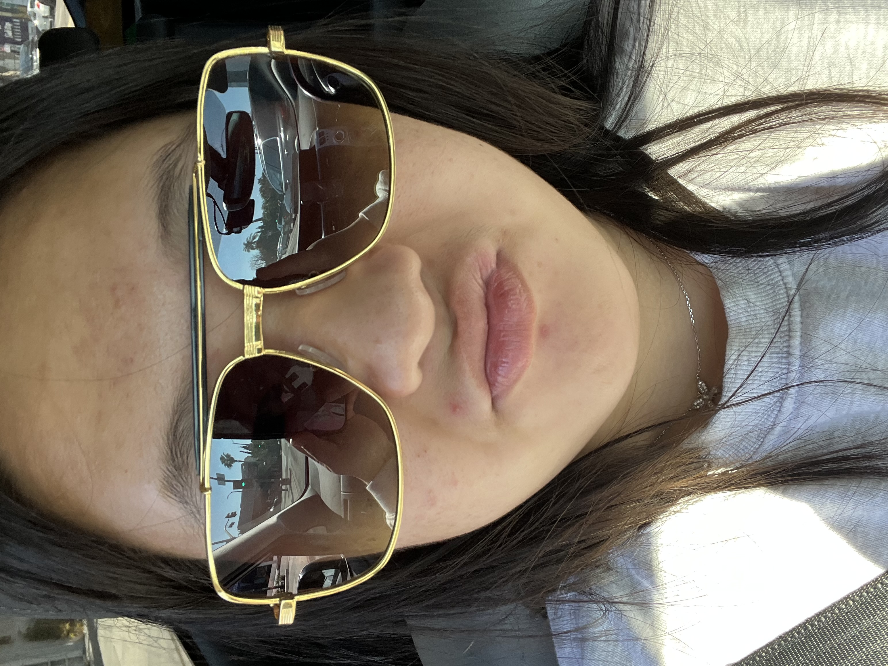
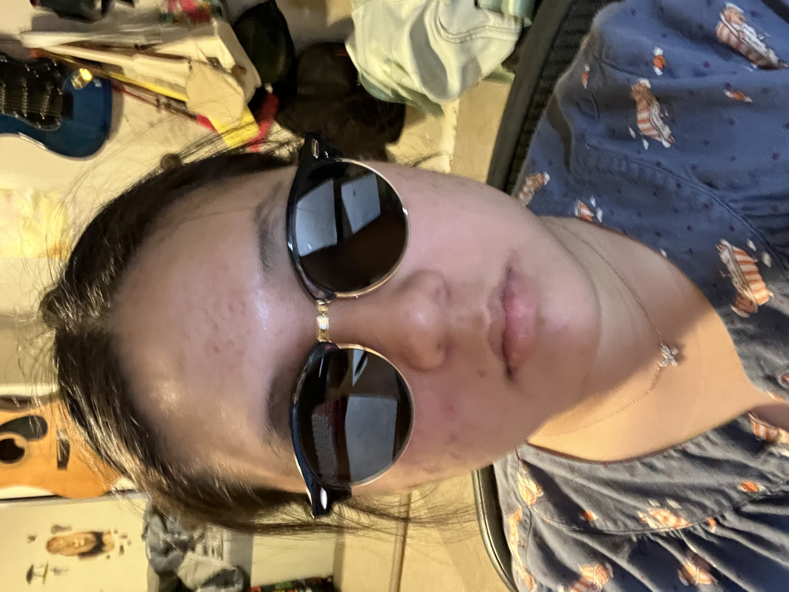
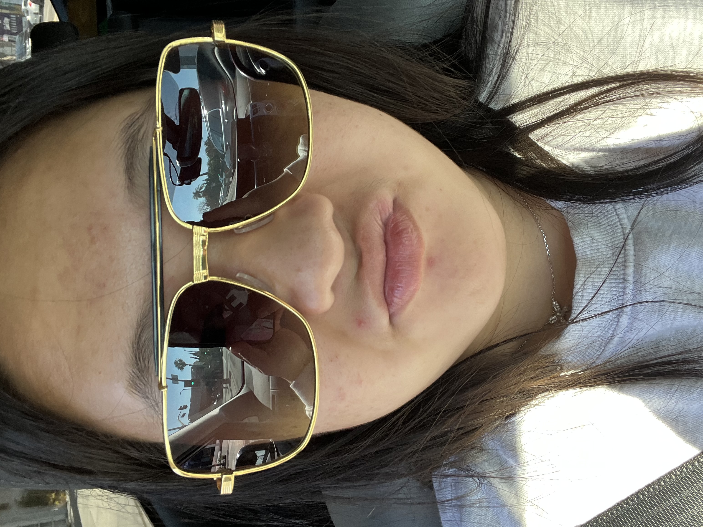
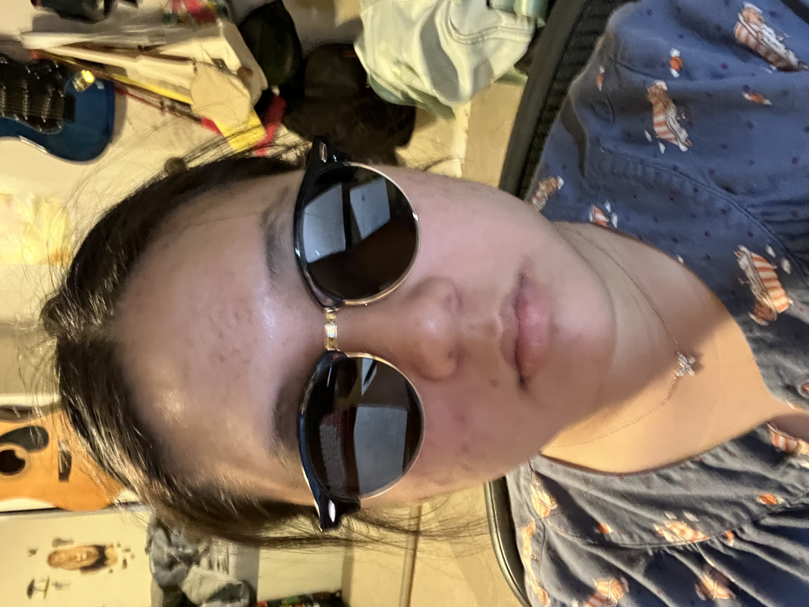

Even though the old Katie Shin was adorable, the current one has potential. She will become the greatest president of the Unites States of America, defying all.
I asked ChatGPT to describe an amazing person
Imagine an individual whose kindness radiates effortlessly, touching the lives of everyone fortunate enough to cross their path. This remarkable person possesses an innate ability to empathize, offering a genuine understanding that makes others feel heard and valued. Their compassion extends beyond words, translating into actions that uplift and inspire. Intellectually curious and open-minded, this amazing individual embraces learning as a lifelong journey. They approach challenges with resilience and creativity, viewing obstacles as opportunities for growth. With an insatiable thirst for knowledge, they continuously strive to broaden their perspectives and contribute meaningfully to the world. In addition to their intellectual prowess, this extraordinary person is guided by unwavering integrity and a strong sense of moral compass. Their honesty and authenticity create an environment of trust and sincerity. Others are drawn to their authenticity, finding comfort in the reliability and transparency that characterize their interactions. A natural leader, this amazing individual leads by example, fostering collaboration and cooperation. They recognize the unique strengths of those around them and empower others to reach their full potential. Through encouragement and support, they build a community of individuals who believe in their own capabilities. Creativity flows through their veins, whether expressed through art, innovation, or problem-solving. This amazing person sees the beauty in diversity, understanding that every perspective contributes to a richer and more vibrant tapestry of life. They celebrate differences and encourage a sense of belonging among those in their community.